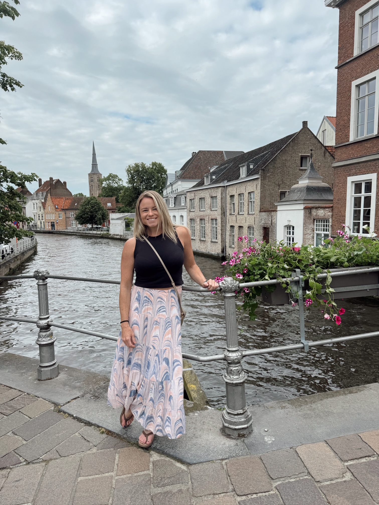

People
People
Current Team
Dr. Gavin Fay (Lab PI)
Associate Professor
gfay@umassd.edu
+1 508 910 6363
Personal website
Github
Google Scholar
Ajmal Abbas
Graduate research assistant
aabbas1@umassd.edu
Portfolio website
Ajmal is currently pursuing a master’s degree in data science at the University of Massachusetts Dartmouth. Originally from India, he brings a strong academic and research background in data-driven problem solving, with a foundation in Machine Learning, Deep Learning, and Artificial Intelligence built through both coursework and hands-on projects. He has completed projects across cybersecurity, agriculture, high-performance scientific computing, and material science prediction, applying advanced ML and DL pipelines to solve domain-specific problems. In the lab, Ajmal is developing ML/DL-based emulators to support ecosystem modeling and decision-making, merging data science foundation with environmental applications.
Kaz Furtado
Undergraduate student intern
Amanda Hart
Ph.D. candidate
ahart2@umassd.edu
Google Scholar
Amanda grew up in New Mexico and attended the University of Miami where she majored in Marine Science and Biology. She is currently a stock assessment Fish Biologist at NOAA Fisheries Northeast Fisheries Science Center in Woods Hole. Her PhD thesis work is centered around developing methods and communication tools for ecosystem-based fisheries Management Strategy Evaluation. In this work, Amanda is using models of New England fisheries that seek to include a broader range of environmental data, fishing fleet dynamics, and species interactions than current stock assessment models.
Separa Hilemariame
Undergraduate student intern
Dr. Leander Höhne
Research Associate
lhohne@umassd.edu
Leander entered the world of fisheries through his M.Sc. studies at the Humboldt University of Berlin and Leibniz Institute of Freshwater Ecology and Inland Fisheries, focusing on recreational fisheries topics such as the impacts of catch-and-release angling on nest-guarding pikeperch. With a developing interest in population dynamics and spatial behavior of fishes, he moved on to do his PhD at the Thünen Institute of Fisheries Ecology in Bremerhaven, Germany. There he delved deep into the stock assessment, management and migration ecology of the panmictic European eel. More recently, Leander has worked on stock assessment and management strategy evaluation for the European eel stock in the Mediterranean at the FAO General Fisheries Commission of the Mediterranean and University of Rome Tor Vergata, specializing in Bayesian hierarchical and integrated ecological-economic modeling approaches. His research in the Fay lab will concentrate on evaluating the integration of environmental variation into stock assessment and economic models and management procedures across different contexts, towards an improved reliability of forecasting results and management advice.
Sarah Hope
M.S. student
shope@umassd.edu
Sarah joined the Fay Lab in the Fall of 2024. She grew up in New Bedford, Massachusetts and completed her undergraduate studies in Writing and Journalism at Emerson College. When she decided to pursue her longtime passion for science, she started her journey at the University of Massachusetts, Amherst and earned a M.S. in Sustainability Science, specializing in climate impacts. She is now pursuing an advanced degree in Marine Science at SMAST, while combining her interdisciplinary background with a quantitative approach to fisheries. Her current research is focused on the intersection of supply chain and ecosystem dynamics, and how they can be used to inform sustainable management decisions and increase access to local seafood in New England.
Rowan Ignatius
MS student, Data Science
rignatius@umassd.edu
Janel Juba
Offshore Wind Certificate Program Coordinator
jjuba1@umassd.edu
Garrett Klee
M.S. student
gklee@umassd.edu
Garrett is a Master’s student that joined the Fay lab in Summer of 2025. He grew up in Seattle, Washington and completed his undergraduate in Environmental Science with a Marine Science emphasis at Western Washington University where he conducted research with Pacific herring. Garrett continued his fisheries work with the Alaskan Observer program before transitioning to working with the Pacific States Marine Fisheries Commission participating in anadromous work. His research in the Fay lab will focus on the performance of stock assessment models and harvest strategies given uncertainties in fishing fleet responses to regulation changes. He is excited to work and be involved in the quantitative research happening in our commercial and recreational fisheries.
Luca McGinnis
M.S. student
lmcginnis@umassd.edu
Luca’s M.S. research is focused on improving the use of fishery dependent data in Northeast US fishery stock assessments, specifically through spatially explicit catch per unit effort (CPUE) standardization for US Atlantic cod. Luca holds a Bachelor’s degree in Marine Science from Boston University, with undergraduate thesis research on using micro-CT imaging and modeling software to compare the morphology of sympatric sand lance species (genus Ammodytes) in the Gulf of Maine. In summer 2023 they started a full time position as a Research Biologist for the Commercial Fisheries Research Foundation.
Ophelia McGrail
Ph.D. student
omcgrail@umassd.edu
Ophelia grew up in north shore Massachusetts and earned their undergraduate degree in Biology & Environmental Studies from Wheaton College, Massachusetts. Their senior thesis work centered on using DNA barcoding to elucidate the genetic identities of morphologically similar marine worms. After Wheaton, they interned at the Rhode Island Division of Marine Fisheries and joined The Nature Conservancy Rhode Island as the Coastal Restoration Program Assistant. They will start their PhD studies in the Fay Lab in fall 2025.
Vraj Patel
undergraduate student intern
Vraj is a Courage Builder intern working in the lab for the fall 2025 semester. He is an undergraduate at UMass Dartmouth studying computer science. An international student from India, Vraj is currently working on improving the computational efficiency of simulation code in SSEEP, to enable more rapid implementation of varying scenarios for modeling survey effort and species distribution change.
María Cristina Pérez Cuesta
Ph.D. student
mperez12@umassd.edu
Cristina is a Marine Biologist with a Master degree in Fisheries Science from the University of Concepcion (UdeC-Chile), and has been working since 2016 at Instituto de Fomento Pesquero (IFOP-Chile) providing scientific advice for the yellownose skate and southern hake stock assessments and also participate as a researcher in the scientific committees for the demersal fisheries. Cristina’s topics of interest are Management Strategy Evaluation (MSE), population rebuilding, ecosystem- based fisheries management, and sustainable fisheries.
Sneha Rangole
Graduate research assistant
srangole@umassd.edu
Catalina Roman
Ph.D. candidate
croman1@umassd.edu
Catalina’s PhD research is conducting simulation testing to assess the performance of the NMFS NEFSC Bottom Trawl Survey in the presence of Offshore Wind, and potential survey mitigation strategies. Catalina holds a Master’s in fisheries from Universidad de Concepción Chile. During her time as a student, she has worked on the standardization of a relative abundance index of a rock lobster species from Juan Fernandez Archipelago as her undergrad thesis and then, and for her master’s thesis project, she studied the spatio-temporal migratory patterns of the same fishing resource using mark recapture data. In 2014, she joined the Fisheries Assessment Department of IFOP (Chilean Fisheries Development Institute), where she has been working as a researcher in the assessment of discard and incidental catch of demersal fisheries of Chile.

Dr. Kelsey Roberts
Research Associate
kroberts6@umassd.edu
Kelsey joined the Fay lab in March 2025 as a research associate. She holds a PhD in Marine Science from Monash University in Melbourne, Australia, where she evaluated the effectiveness of Australia’s marine protected area network in safeguarding biodiversity. She has previously completed postdoctoral projects at Louisiana State University, Stony Brook University, and the US Geological Survey Wetland and Aquatic Research Center. Her research in the Fay lab will focus on integrating climate forecasting data products into stock assessment and management procedures in collaboration with the Northeast Climate Integrated Modeling Initiative (NCLIM).
Vishnu Selvaraj
Graduate research assistant
vselvaraj@umassd.edu
Vishnu is a Master’s student in Data Science at the University of Massachusetts Dartmouth, originally from India, with extensive academic and research experience in machine learning, deep learning, and data-driven cybersecurity applications. His previous work includes developing hybrid models that integrate CodeBERT, AST stylometry, and deep learning architectures for software vulnerability detection, as well as designing Graph Neural Network–based intrusion detection systems to strengthen network security. Beyond cybersecurity, he has applied CNNs for medical imaging in pneumonia detection, computer vision for pothole classification, and NLP-based sentiment analysis during industry projects. Skilled in Python, R, SQL, TensorFlow, PyTorch, and modern visualization tools, Vishnu is currently expanding his expertise into marine science, building ML/DL-based statistical emulators to support large-scale ecosystem modeling and decision-making.
Kamran Walsh
Ph.D. student
kwalsh13@umassd.edu
Kamran Walsh is a PhD student at the School of Marine Science and Technology who joined the Fay Lab in the fall of 2023. He previously attended the Scripps Institution of Oceanography as an undergraduate and Master’s student, where his research centered around interdisciplinary studies of larval fishes in the California Current Ecosystem. While living on the West Coast, he was also involved in the California Cooperative Fisheries Research Program (CCFRP), a statewide program that intersects Marine Protected Area research with stakeholder involvement, as well as work ranging from bluefin tuna aquaculture to four years in the fishing industry. For his PhD, he is interested in building strength in quantitative techniques that address contemporary issues of fisheries and ecosystem management in the New England area and beyond.
Sophie Wulfing
Research Associate
swulfing@umassd.edu
Sophie joined the Fay Lab in March of 2025. She grew up in Washington State but got her masters degree at the University of New Hampshire. After her masters, she completed a Fulbright Student Research Grant in Makassar, Indonesia studying the affects of mangrove replanting efforts on local fish abundance and biodiversity. Her current research in the Lab focuses on how incorporating different environmental projections affects management decisions and is using yellowtail flounder as an example species.
Alumni
(next and current positions in italics)
{kind=link}
Olivia Aguiar
undergraduate marine data science technician 2020-2022 Next: MS student, Oklahoma State University
Now: PhD student, Temple University

Tabitha Breault
undergraduate marine data science technician 2019-2022
Next: UMass Dartmouth class of 2023
Now:
{kind=link}
Dr. Jonathan Cummings
Postdoctoral researcher 2018-2021
Next/Now: Species Status Assessment Scientist, US Fish and Wildlife Service
Personal website
Sofia Gabriel
lab technician 2019 Next: PhD student, University of Tasmania
Now:
Madeleine Guyant
Technical Associate & Decision support specialist 2022-2024
Next/Now: Global Fisheries Specialist, The Nature Conservancy
Madeleine’s work with the lab focused on the New England & Mid-Atlantic Fishery Management Councils’ synthesis of Fish Habitat and Climate Vulnerability assessments, as well as facilitating stakeholder engagement for the New England Fishery Management Council’s prototype Management Strategy Evaluation for Ecosystem-Based Fisheries Management of Georges Bank. Madeleine also supported stakeholder workshops on CINAR-funded work to evaluate changes to NOAA fishery independent survey data products due to overlap with wind installation and lease areas. Madeleine holds a Master’s in Environment Politics and Development from SOAS University of London, and undergraduate degrees from North Carolina State University in Environmental Technology and Management and French Language and Literature. She has a background in fisheries and wildlife policy, and enjoys working with science communication.
Dr. Emily Liljestrand, PhD
Postdoctoral researcher 2023
Next/Now: Stock assessment scientist, NOAA Fisheries Northeast Fisheries Science Center
Emily’s postdoc work in the lab focused on technical analyses for the New England Fishery Management Council’s prototype Management Strategy Evaluation for Ecosystem-Based Fisheries Management of Georges Bank. This included developing modules for a multispecies MSE, including stock complex-based control rules, and working with a multispecies length-based operating model, Hydra. Emily received her Ph.D. from Michigan State University where her research focused on the performance of state-space stock assessment models. Emily was also a 2019 recipient of the NMFS-SeaGrant Population and Ecosystem Dynamics Fellowship.

Angelia Miller
M.S. 2025
Next: Fishery Specialist, New England Fishery Management Council
Now: Owner and Principal Consultant, Maris Collaborative LLC.
Personal website, LinkedIn
Angelia’s thesis work focused on evaluating the impact of offshore wind impacts to the NOAA Northeast Fisheries Science Center’s Northeast Bottom Trawl Survey using empirical and simulation modeling tools. During her time in the lab, Lia also ran open science trainings, supported regional stock assessment model development and scenario planning for Sustainable Regional Systems network and community of practice. She is a certified Carpentries Instructor.
{kind=link}
Ashleigh Novak
Technical associate & lab manager (2019-2021)
Next/Now: Atlantic White Shark Conservancy
Personal website, Google Scholar
{kind=link}
Liberty Schilpp
M.S. 2018
Next/Now: Education Coordinator & Science/Math teacher, Nauset Academy, Brewster MA
Liberty completed her non-thesis M.S. degree in the Fay lab, with research on evaluating factors contributing to variability in size-at-age for Northeast US groundfish, and the implications of size-based time-varying natural mortality in state-space stock assessment models for Gulf of Maine cod. (Main collaborator: Dr. Tim Miller, NOAA NEFSC)
{kind=link}
Dr. Tammy Silva, PhD
Postdoctoral researcher 2018-2020
Next/Now: Research Marine Scientist, NOAA Stellwagen Bank National Marine Sanctuary
{kind=link}
Dr. Vanessa Trijoulet, PhD
Visiting Scholar UMassD / Postdoctoral researcher NOAA NEFSC 2016-2018
Next/Now: Stock assessment scientist, Danish Technical University, Denmark
Google Scholar
Vanessa worked in collaboration with NOAA Fisheries (Northeast Fisheries Science Center, Woods Hole) and SMAST on the development of a multispecies state-space fisheries assessment model for the Georges Bank stocks. Vanessa’s research focus is on marine ecosystem modelling, with interests in using modelling to study population-level interactions and improve conservation and management strategies. Vanessa obtained her PhD from the University of Strathclyde (Glasgow, UK) where she applied bioeconomic models of grey seal predation impacts on the West of Scotland fisheries. Vanessa has a Master’s degree in oceanography, specialized in marine biology from the Oceanographic Centre of Marseille, and a Bachelor’s degree in Sciences and technique specialized in life sciences and marine biology from the University of La Rochelle. (Main collaborators: Dr. Kiersten Curti & Dr. Tim Miller, NOAA NEFSC)
{kind=link}
Samantha Weiss lab technician 2019-2020
Next: MS student, Georgia Southern University
Now:
{kind=link}
Ashley Weston
M.S. 2018
Next: Quantitative Fisheries Researcher, Gulf of Maine Research Institute
Now: Statistician, NOAA Fisheries, Greater Atlantic Regional Fisheries Office
Ashley grew up fishing on the Chesapeake Bay. She attained a B.S. double major in Fisheries Conservation and Biological Sciences from Virginia Tech. For her MS thesis, Ashley worked with groundfish stock assessments in the Gulf of Alaska, focusing on developing models that account for the effects of environmental drivers on fisheries resources and discerning robust selection tools for these models. In addition, Ashley investigated subsequent implications of future climate change within these stock assessments on current management policies. (Main collaborator: Dr. Carey McGilliard, NOAA AFSC).
{kind=link}
Robert Wildermuth
Ph.D. 2021
Next: Postdoctoral Fellow, University of California Santa Cruz
Now: Fishery Biologist, NOAA Fisheries Southwest Fisheries Science Center
Google Scholar
Robert’s research interests focus on how to use quantitative tools to make effective management decisions with uncertain and incomplete knowledge. As a 2018 NMFS-Sea Grant Population and Ecosystem Dynamics Fellow, his PhD work looked at how assumptions about the structure and function of marine social-ecological systems can affect decision-making. He applied both quantitative and qualitative models in Bayesian statistical frameworks to analyze decision-support tools for managing the social-ecological system on Georges Bank, USA, including objectives of fisheries sustainability and human wellbeing. Robert earned a B.S. in Zoology and Biological Sciences at Colorado State University and a M.S. in Biology at Arizona State. Research topics included demographic effects of California sea lion aggressive behavior, sexually selected traits in the Trinidadian guppy, and oil spill impacts on marine mammal and mollusk populations. (Main PhD collaborator: Dr. Sarah Gaichas, NOAA NEFSC).
{kind=link}
Megan Winton
Ph.D. 2024
Next/Now: Lead Research Scientist, Atlantic White Shark Conservancy
Google Scholar
Megan’s research interests are centered on the development and application of statistical methods to improve understanding of the spatial ecology and population dynamics of highly migratory marine species. Her Ph.D. research was focused on developing frameworks to integrate electronic tagging data into population assessments for protected or prohibited species, with focus on geostatistical methods applied to loggerhead sea turtles in the Mid-Atlantic, and to white sharks off the coast of Cape Cod, Massachusetts. Megan earned her M.S. in Marine Science at California State University Monterey Bay’s Moss Landing Marine Laboratory, and received her B.S. in Biology from Emory University. Megan has applied her quantitative analytical skills in positions at several research institutions, including Connamessett Farm Foundation and the NOAA Fisheries Northeast Fisheries Science Center. She is currently the Atlantic White Shark Conservancy’s lead research scientist. (Main PhD collaborators: Dr. Heather Haas, NOAA NEFSC, Dr. Greg Skomal, Mass DMF)